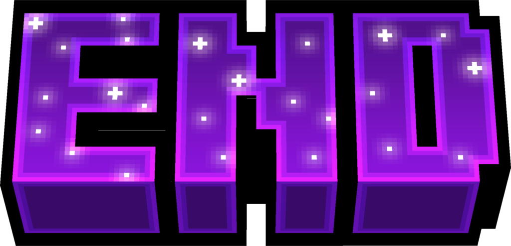

La gneracion natural del servidor a sido cambiada a una mas compleja contando con mejoras a cada bioma y añadiendo biomas nuevos asiendo mas divertida la exploracion de estos biomas


|
Nether |
|---|
Al igual que el Overworld el nether a resivido una pequeña mejora contando con algunos biomas nuevos como el bioma de cuarzo pero la mejora de el nether no esta sentrata en lo que seria la generacion sino en el apartado de las estructuras nuevas que posee


|

End |
|---|
El end una de las dimensiones a la cual se le an implementado mas cambios de entre las 3 pricipales ya que ahora esta particular dimension posee una generacion de mundo muy disitinta a la origial contando con muchos nuevos biomas muy bonitos e interesantes y tambien contando con una remodelacion de las estrucutras existentes sino tambien contando con nuevas estructuras muy interesantes